3.2 Born digital dokumenty (e-borny)
Dalším typem dokumentů, které je možné zpracovat v systému ProArc, jsou tzv. born-digital či e-born digitální dokumenty. Tyto dokumenty už vznikly elektronicky, v digitální podobě, není potřeba je digitalizovat a v některých případech vůbec nemají svoji tištěnou listinnou podobu. E-borny jsou nejčastěji ve formátu PDF, nebo EPUB.
3.2.1 NDK Svazek eMonografie
NDK Svazek eMonografie je model pro zpracování elektronické monografické publikace, který je v souladu se standardy Národní knihovny ČR.
3.2.1.1 Založení objektu
Po přihlášení do nového klienta ProArcu klikneme na horní záložku a vybereme Nový objekt:
 {width="6.267716535433071in"
height="1.2777777777777777in"}Po kliknutí na Nový objekt se objeví
tabulka. Z rozbalovací nabídky vybereme Model NDK Svazek eMonografie:
{width="6.267716535433071in"
height="1.2777777777777777in"}Po kliknutí na Nový objekt se objeví
tabulka. Z rozbalovací nabídky vybereme Model NDK Svazek eMonografie:
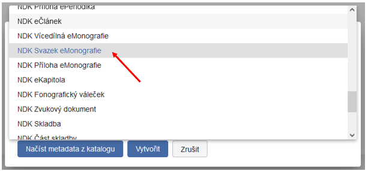
{width="6.267716535433071in" height="2.9166666666666665in"}Nový objekt je možné vytvořit dvěma způsoby:
-
Načíst metadata z připojeného katalogu,
-
založit jako prázdný pomocí tlačítka Vytvořit, v tomto případě musíte metadata vyplnit ručně.
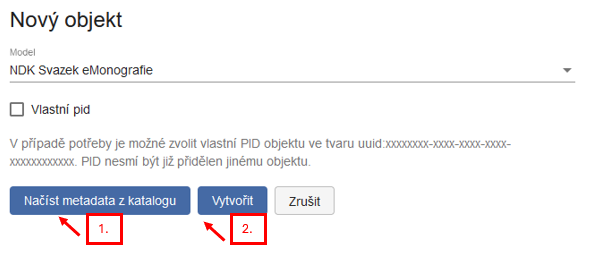
{width="6.15625in" height="2.6354166666666665in"}Při načítání z katalogu je možné najít záznam ke zpracování podle několika polí (SYSNO, ISBN, signatura, čárový kód, číslo ČNB, název aj.):
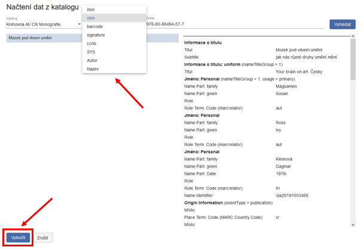
{width="6.267716535433071in" height="4.319444444444445in"}Po vybrání správného záznamu je potřeba kliknout na tlačítko Vytvořit. Objeví se nové „okno" -- formulář, do něhož se zkopírovala metadata ze záznamu z katalogu:
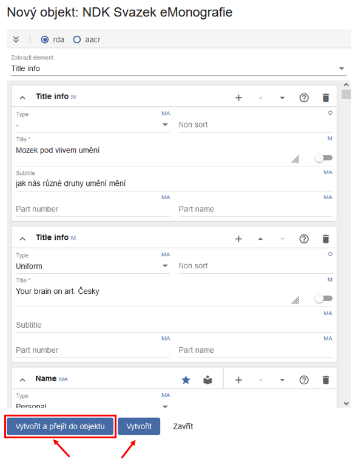
{width="6.197916666666667in" height="7.927083333333333in"}Vyplněná data ve formuláři je vhodné zkontrolovat, proto doporučujeme Vytvořit a přejít do objektu
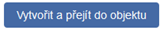
{width="1.6875in" height="0.3020833333333333in"}.Pokud kliknete pouze na Vytvořit
 {width="0.7291666666666666in"
height="0.3333333333333333in"}, eMonografii budete muset najít na
úložišti (např. podle modelu, názvu atd.).
{width="0.7291666666666666in"
height="0.3333333333333333in"}, eMonografii budete muset najít na
úložišti (např. podle modelu, názvu atd.).
V případě že ProArc upozorní na nevalidní data nic se neděje, objekt se stejně uloží a na další obrazovce je možné formulář ještě dále upravovat.
Zda jsou vyplněná data validní indikuje ikona v pravém horním rohu panelu s metadatovým formulářem.
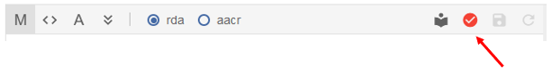
{width="6.267716535433071in" height="0.8611111111111112in"}Pokud je tato ikona červená, formulář obsahuje chybu. Pro snadné nalezení problematického elementu je možné si rozkliknout rolovací nabídku s elementy, zde bude nevalidní element označen červeně, např.: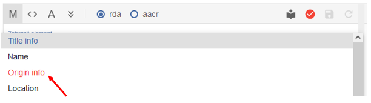
{width="6.267716535433071in" height="1.7361111111111112in"}Poté, co zkontrolujete stažené údaje, můžete objekt uložit symbolem diskety
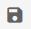
{width="0.3229166666666667in" height="0.3020833333333333in"} . Doporučujeme zkontrolovat např. Fyzický popis, kde se občas chybně stahuje hodnota „print" namísto správného „electronic" (vyberte z roletky).3.2.1.2 Přidání plného textu (PDF)
Tlačítkem
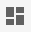
{width="0.3229166666666667in" height="0.3333333333333333in"} (Rozložení) v pravém horním rohu obrazovky si uživatel nastavuje panely, se kterými chce pracovat.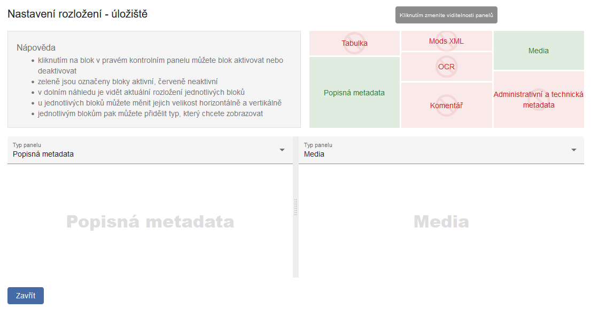
{width="5.17742125984252in" height="2.7007983377077864in"}Kliknutím na blok v pravém kontrolním panelu můžete blok aktivovat nebo deaktivovat, zeleně jsou označeny bloky aktivní, červeně neaktivní. Pro přidání PDF je potřeba mít zobrazený panel „Media":
 {width="6.267716535433071in"
height="1.8194444444444444in"}
{width="6.267716535433071in"
height="1.8194444444444444in"}
Doporučujeme mít aktivovaný alespoň ještě jeden blok - například s popisnými metadaty nebo Mods xml, abyste si byli jistí, zda PDF přidáváte ke správnému dokumentu.
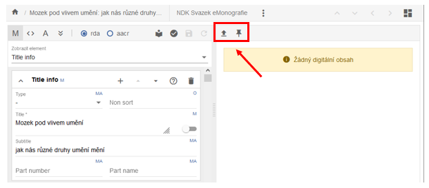
{width="6.267716535433071in" height="2.75in"}Pro přidání PDF je třeba na panelu Media kliknout na ikonu šipky {width="0.23958333333333334in" height="0.3229166666666667in"} , pojmenované "Načíst nový digitální obsah" a vybrat PDF soubor z disku počítače. Oproti předchozím verzím, v novém klientovi nemusíte nic ukládat, PDF se uloží samo.
V případě, že se spletete a načtete chybný digitální dokument, lze jej smazat, načíst nový, případně s ním dále pracovat (např. přiblížit/oddálit, generovat PDF/A).
3.2.1.3 Přidělení urn:nbn
Pro export NDK PSP balíčků a archivních balíčků je přidělení povinné, export ve starším formátu pro Krameria je možný bez přidělení urn:nbn.
Urn:nbn můžete dokumentu přiřadit přímo v editaci v úložišti, kde funkci najdete na liště pod třemi tečkami:
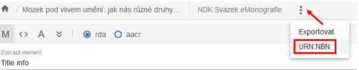
{width="6.267716535433071in" height="1.2222222222222223in"}Další možností je přidělení v základním okně úložiště-hledání, kde je funkce umístěná na lištách obou horizontálních podoken:
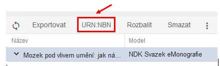
{width="4.53125in" height="1.3051148293963255in"}Po stisknutí tlačítka se zobrazí dialogové okno, kde v roletce můžete vybrat registrátora. Registrátor se upřesňuje v konfiguraci ProArcu. Po registraci dostanete zpětnou vazbu od resolveru:
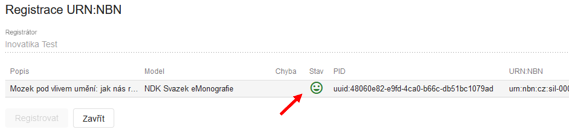
{width="6.010416666666667in" height="1.34375in"}Urn:nbn je automaticky zapsáno do metadat mezi platné identifikátory dokumentu.
V ProArcu je ošetřena zpětná vazba v případě, že omylem zaregistrujete dokument opětovně.
3.2.1.4 Export dokumentu, import do Krameria a archivace
Po přidělení urn:nbn je možné e-monografii exportovat jako NDK PSP. NDK PSP balíček je primárně používán k importům do digitální knihovny Kramerius s image serverem. NDK PSP balíčky se případně předávají do Národní digitální knihovny (VISK, replikace).
NDK PSP balíček lze vyexportovat do lokálního adresáře nebo přímo do Krameria. O cíli exportu rozhodujete v dialogovém okně volbou z rolovací nabídky:
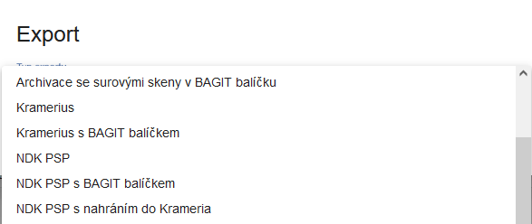
{width="6.114583333333333in" height="2.5833333333333335in"}Archivní balíčky se vytvářejí za účelem uložení dat na úložištích mimo ProArc. Vyexportovat je lze obdobně jako NDK PSP balíček.
Funkce v úložišti
Nastavení uživatelského profilu
Volba „Profil" na navigační liště slouží k odhlášení z aplikace, ke změně hesla a k osobnímu přizpůsobení aplikace. Toto přizpůsobení se týká tří oblastí.
Preferované hodnoty
Zde zadané hodnoty by měly být ty, které nejčastěji používáme při výběru z roletek, protože se v nich budou nabízet na prvních místech.
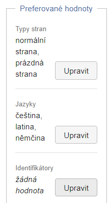
{width="2.2503138670166227in" height="4.135994094488189in"}Rozbalení formuláře
Rozbalení formuláře je funkce, která zajistí pro zvolený model rozbalení části formuláře „related items" při založení objektu, i když se do ní nestáhly z katalogu žádné údaje (využívá se především při zpracování článků).
Obecně platí, že prázdné elementy jsou ve formulářích jednotlivých modelů sbalené, dají se však ručně rozbalit a vyplnit.
Nastavení sloupců
Zde můžeme pro každou oblast aplikace, ve které jsou údaje uspořádány v tabulce, vybrat sloupce, které chceme zobrazit.
V základní obrazovce ProArcu -- v úložišti/hledání -- můžeme vybrat požadované sloupce samostatně pro horní i dolní okno (strom):
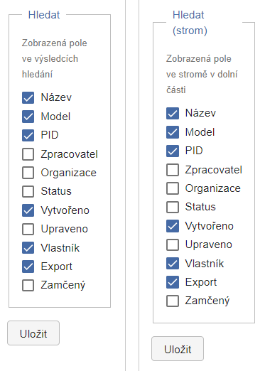
{width="3.768489720034996in" height="5.273863735783027in"}Stejná možnost se nabízí pro obrazovku
-
editace v importu (tj. pro obrazovku paginace načteného dokumentu),
-
editace již vytvořeného objektu v úložišti,
-
správy procesů,
-
fronty načítání ve správě procesů.
Toto lokální nastavení je vázané na přihlášeného uživatele a po odhlášení zůstávají nastavené poslední uložené volby.